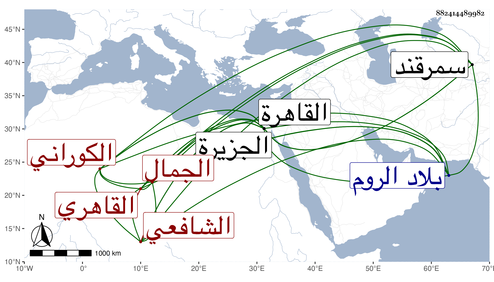

0902Sakhawi.DawLamic.ITO20230111-ara1.EIS1600.882414489982
Biography ID: 882414489982
185
عبد الله بن محمد بن خضر بن إبراهيم الجمال الكوراني ثم القاهري الشافعي ويعرف بالكوراني . ولد سنة ثماني عشرة وثمانمائة تقريبا وقال أن أول اشتغاله كان بالجزيرة على ناصر الدين عمر المارينوسي تلميذ الحلال وأنه سافر معه إلى الروم فورد على الشيخ ما اقتضى رجوعه وتخلف هو ببرصا فلازم غياث الدين حميد حتى أخذ عنه كلا من المطالع وحاشية الشريف وشرحي المفتاح ، وسافر إلى القاهرة فأخذ عن باكير وغيره كالعلاء القلقشندي قرأ عليه في الحاوي ثم لازم الشمس الشرواني في الكشاف والمواقف وغيرهما من العقليات والنقليات ، ولم ينفك عنه حتى مات ونوه الشيخ بفضيلته بحيث كان يقول أين مثله وأنه ليس له نظير في مدينة سمرقند لا في غزارة علمه ولا في سيلان ذهنه أو نحو هذا فأخذ عنه الطلبة فنونا كالتفسير وأصول الدين والمعاني والبيان والمنطق والعربية واختص بالولوي السفطي وكان يحضر دروسه بحيث نزله في الجمالية وكذا سمع على ابن ناظر الصاحبة وابن الطحان والعلاء بن بردس في صفر سنة خمس وأربعين وعلى شيخنا والبدر البغدادي وتردد إليه كثيرا وصحب إمام الكاملية وتنزل في الجهات ثم ولي مشيخة سعيد السعداء بعد العبادي ولم يسلك مسالك الشيوخ بل كان يمشي من منزله بالقرب من سوق أمير الجيوش إلى بيت البدر العيني بالقرب من جامع الأزهر لأجل لعب الشطرنج مع جماعة صهر قاوان ويبدو منه ومن غيره في حقه ما يقبح وربما فاتته بعض الصلوات إلى غير ذلك مما لا يليق ، وكذا درس التفسير بالمنصورية بعد موت النجم بن حجي نيابة عن ولده وكان النجم ممن قرأ عليه في الابتداء وكذا قرأ عليه الزين بن مزهر ولازم السعي إليه حتى عرف به وحج معه في ركب الرجبية ووقع بينه وبين ابن قاسم هناك ما لا خير في شرحه ، وبالجملة فهو متميز في الفنون ولا عهد له بالفقه ونحوه والغالب عليه الكسل والرغبة في المزاح . مات في شعبان سنة أربع وتسعين ودفن في تربة السعيدية رحمه الله وإيانا .
